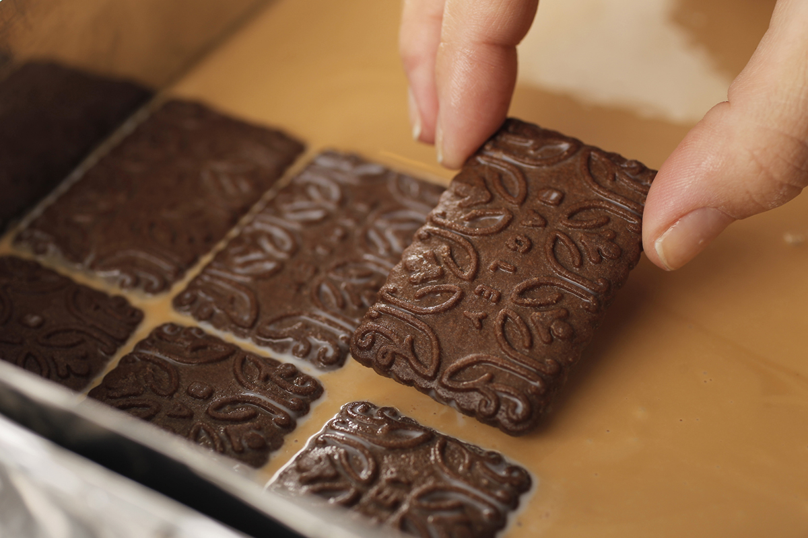

Mi comida y mi postre favoritos
• C H O C O T O R T A •

Ingredientes
- galletitas de chocolate
- dulce de leche
- crema de leche o queso crema
- cacao
- leche
- chocolate en barra o baño
Preparacion
- Mezclar en una taza la leche con cacao
- Mezclar 4 cucharadas de dulce de leche con crema de leche o queso crema, y batir hasta obtener una mezcla homogénea
- Luego en una fuente colocar una capa de galletas humedecidas con leche con cacao.
- Colocar una capa de la mezcla de crema o queso y dulce de leche.
- Continuar así y realizar capas a gusto, al final en la última capa, si lo prefiere, colocar chocolate rallado o baño de chocolate
- Llevar a la nevera de 1 a 3 horas o más para que logre mayor consistencia.